Les St Brèves du Vent (Saint-Brévin)

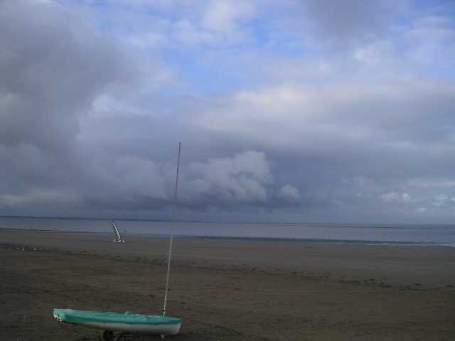
La nuit de vendredi à Saint-Brévin avait été chaude : à 6 h du matin, encore Force 6 et des déluges ! Mais à 9 h, c'était supportable : Force 2, encore des grains à l'horizon et des gouttes par-ci par-là.

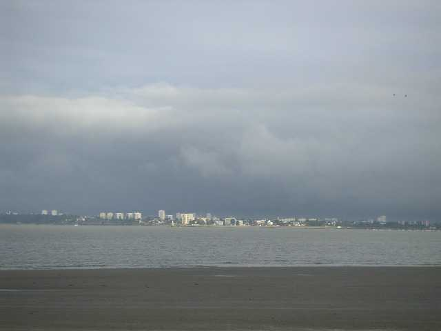
Mais la météo s'est améliorée progressivement et les cerfs-volants sortent de leurs housses.

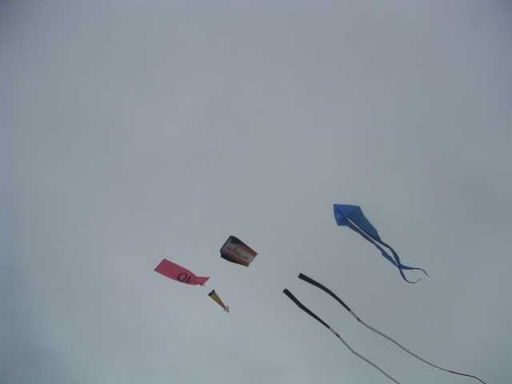
Les arches ne seront pas en reste.

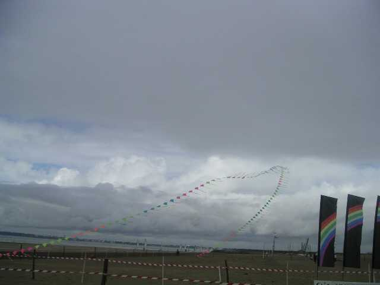
Et les tentes non plus ! par exemple celles des Pirates ou des espagnols...

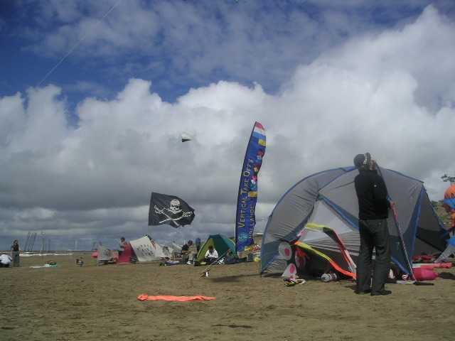
Et puis après une matinée couverte et inquiète, vers midi, tout est arrivé à la fois : le ciel bleu, le soleil et l'apéro...

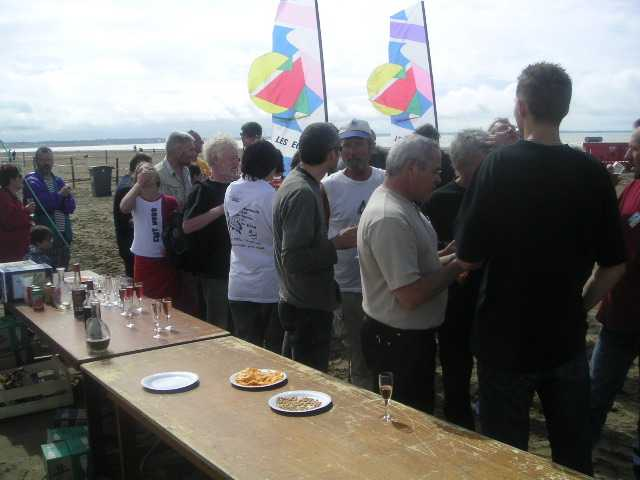
L'après-midi va être très belle, et ce sera une grande journée de cerf-volant, avec un vent lisse soufflant de la mer Force 3 à 4 et bien régulier.

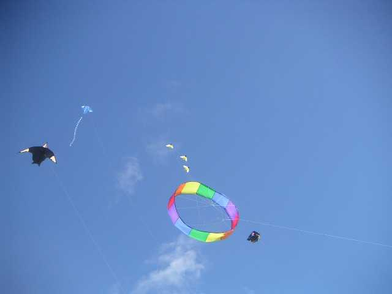
Des bannières multiples et complémentaires déploient leur arc-en-ciel...

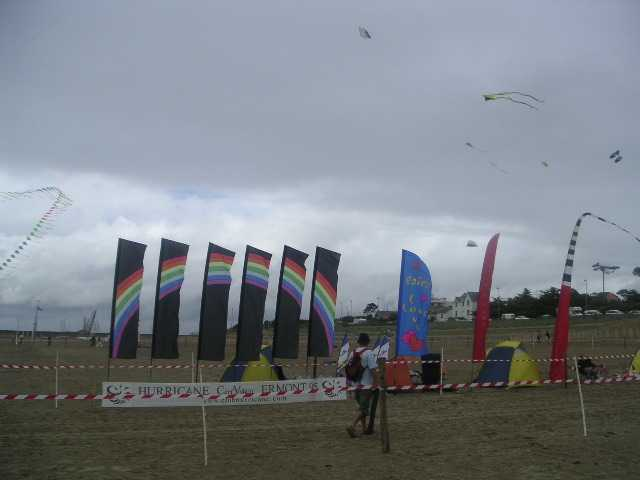
...tandis que celles des locaux, les Eoliens, balisent l'accueil...

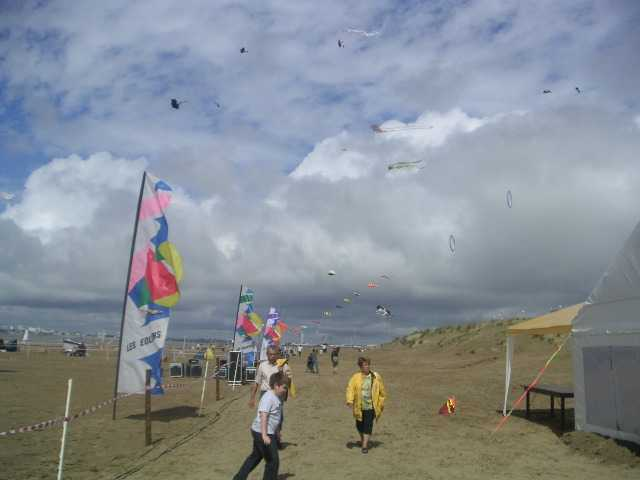

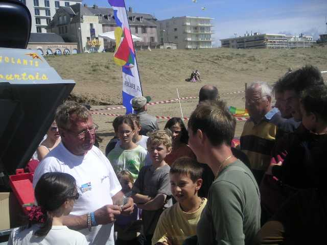
Jean-Claude a monté ses moulins et donne une leçon générale et très suivie de découpage artistique de bouteilles. Mais il ne dit pas tout : la théorie ne suffit pas, il faut avoir d'abord en amont fabriqué ou arrangé ses propres outils ; ensuite pour découper il faut l'oeil et le coup de main pour faire du travail régulier et propre ; mais surtout le sens artistique est indispensable pour ne pas faire sac poubelle à emballages...

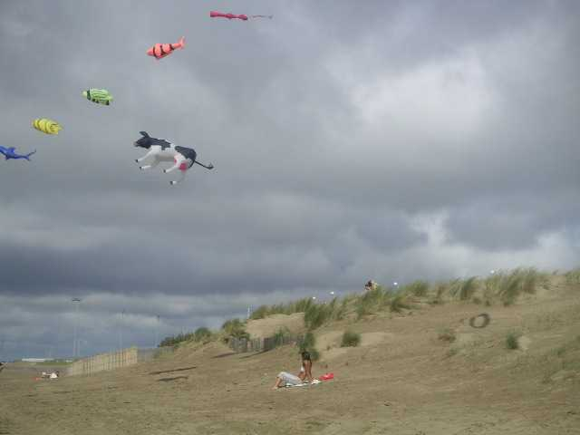
Le ciel est si beau : même des sirènes viennent contempler les oeuvres d'art au dessus de leur tête !

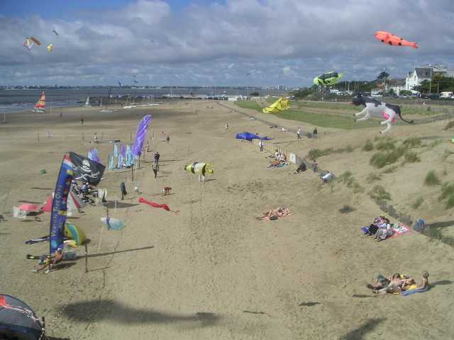
Enfin je réussis grâce à un dispositif complexe ma première photo aérienne présentable...

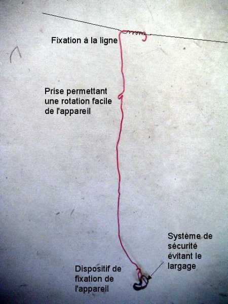
La nacelle, le crochet pour la ligne, la bielle de suspension semi-rigide absorbant les vibrations, et le dispositif de rotation sont constitués d'un fil de cuivre (section 2,5 mm2) revêtu de plastique pour éviter l'oxydation et assurer la sécurité en cas de bris du fil de cuivre, le tout judicieusement plié.

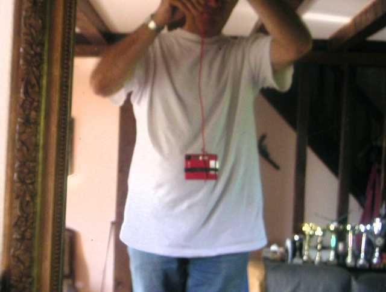
L'appareil, monté dans la nacelle, peut-être orienté dans toutes les directions. La photo est prise en utilisant le retardateur ! La durée de celui-ci est chez moi de 10 secondes, ce qui ne permet pas de monter bien haut. De plus j'ai l'impression que la mise au point se fait au moment du déclenchement (à confirmer), donc il faut viser loin et à peu près dans la bonne direction pour l'éclairage à cet instant !

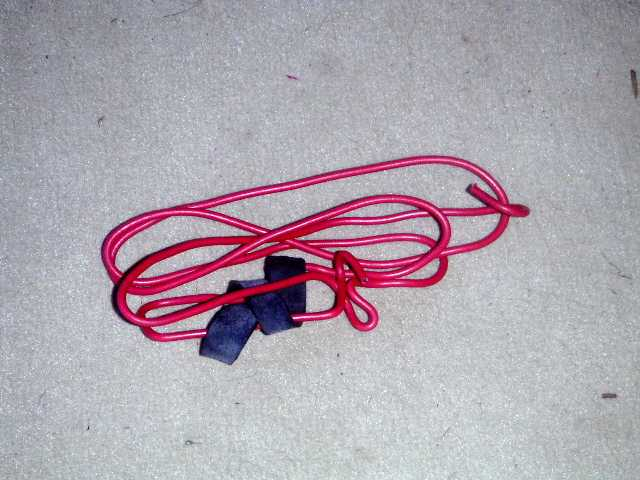
L'avantage est l'extrême compacité et la solidité de l'ensemble une fois replié, ce qui permet le transport en vrac dans le fond du sac, là où le sable se rassemble (ou plutôt se rassemblait avant qu'un orifice de vidange ne se crée à force de traîner le sac sur toutes les plages)... Je recommande quand même de le mettre dans un sac car si une ficelle traîne à proximité, il se jette dessus de suite comme un anaconda mâle sur un anaconda du sexe opposé.

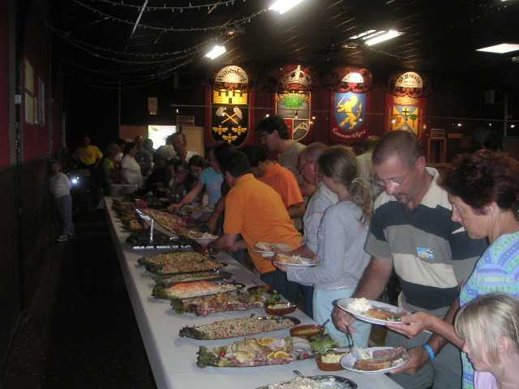
Le soir, rassemblement à la Salle de l'Etoile et ses blasons armoriés pour un dîner-buffet.

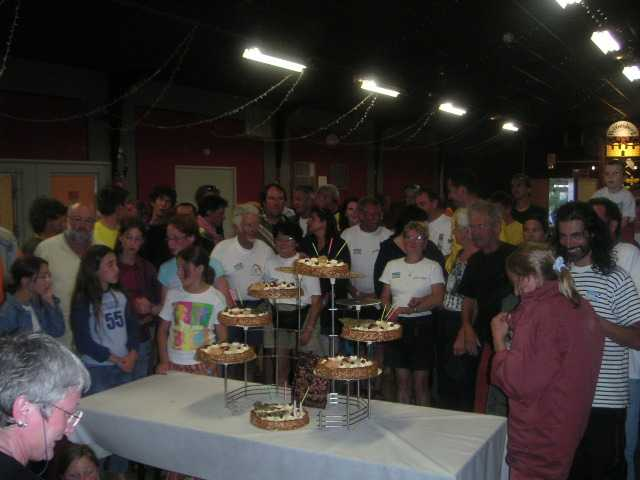
La photo de groupe réunit les participants devant les gâteaux pour ouvrir les appétits.
La charmante organisatrice nous annonce que Capri c'est fini et les St Brèves du Vent aussi ! Mais une manifestation du même type aura lieu à la même date au même endroit. Ben alors, pourquoi changer ? Doit y avoir un problème politique là-dessous !

La future manif est baptisée (on a eu les dragées) "Gonflés à bloc", peut-être pour faire plus ado et attirer les jeunes, quoique l'expression soit déjà très archéo (au moins). Bon, on gonflera les cerfs-volants...
Enfin le samedi se termine par un très beau vol de nuit, avec un bon vent régulier, pas trop froid, un bon éclairage et un bon feu d'artifice final !

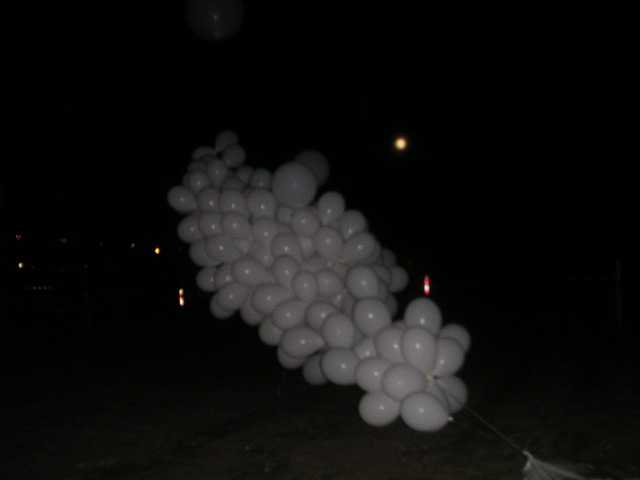
Le terrain était décoré de ballons, des gros, des petits, seuls ou en grappe.

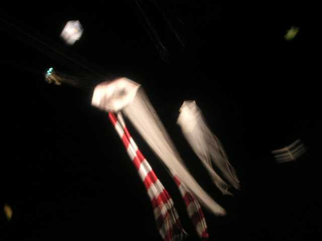
De grands cerfs-volants étaient de sortie, dont celui-ci vraiment énorme et très beau, bien que la photo ne lui rende guère hommage (faudrait un pied et que le machin ne bouge pas, et que je ne tienne pas mon Albatros dans la main gauche...).

Encore bien des frayeurs pour Logos !
Et le dimanche ? me direz-vous : ben, je n'étais pas là, excuse aux organisateurs, j'étais à Chambord pour le Secours Populaire Français qui organisait une fête devant le château, occasion exceptionnelle à ne pas manquer même si le but n'avait pas été caritatif. Dommage qu'il n'y ait pas de manifestations tous les week-ends et qu'en même temps elles se télescopent, mais on fait avec. Quand même dur, je n'ai dormi que 3 heures après le dîner, le vol de nuit et deux heures de route avant de me relever à 5 heures pour finir le trajet et être à Chambord avant la fermeture des grilles... (voir reportage bientôt...)